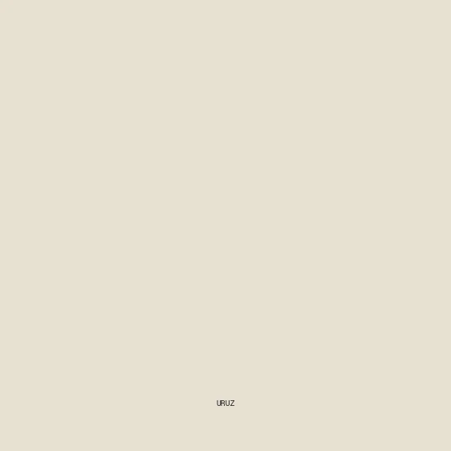

Sliporune 3067
Le premier slip doté d’une bindrune : un slip en coton bio portant, en haut de la fesse gauche, un patch doublé d’une triplure thermocollante sur lequel est pyrogravée une bindrune de trois runes, pour soigner et prévenir les hémorroïdes.
Algiz, rune de protection, agit comme un bouclier contre la pathologie ; Uruz, rune de guérison et de force vitale, revitalise le corps et renforce le système immunitaire ; Laguz purifie l’organisme. Les trois runes partagent leurs tracés : cinq traits suffisent là où trois runes séparées en demanderaient huit.
Déclinaisons envisagées : la Culottorune, version féminine, et des évolutions anti-odeur et anti-traces de pneu.
Fiches


Animation
